Epoch 6 Report
Comprehensive analysis of Epoch 6 performance metrics and user behavior
Locks and Unlocks


Octant Aggregates
Amounts (ETH)
{% include e6/table_amounts.html %}
Users (addresses)
{% include e6/table_users.html %}
Note: patron mode not included.
Users
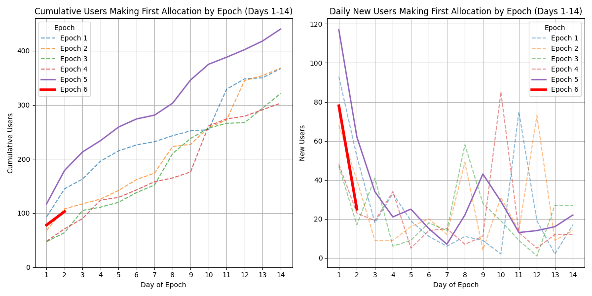
(1.1) Epoch Progress
{% capture content %} {% include e6/content/text_1.1.md %} {% endcapture %} {{ content | markdownify }}
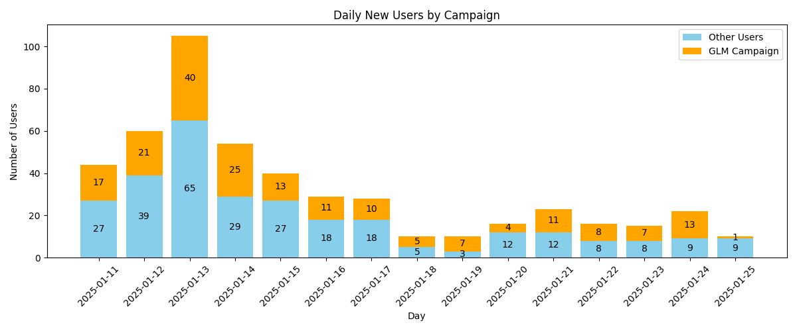
(1.2) Daily New Users
{% capture content %} {% include e6/content/text_1.2.md %} {% endcapture %} {{ content | markdownify }}
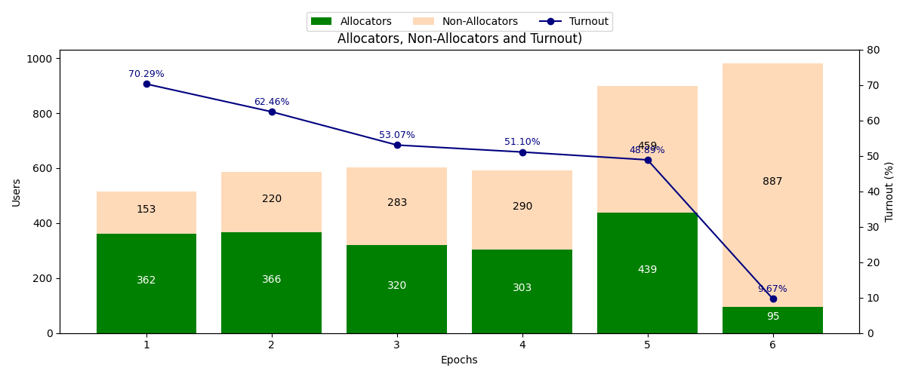
(1.3) Epoch Turnout
{% capture content %} {% include e6/content/text_1.3.md %} {% endcapture %} {{ content | markdownify }}
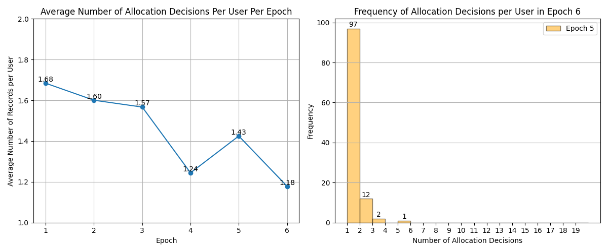
(1.4) Allocation Changes
{% capture content %} {% include e6/content/text_1.4.md %} {% endcapture %} {{ content | markdownify }}
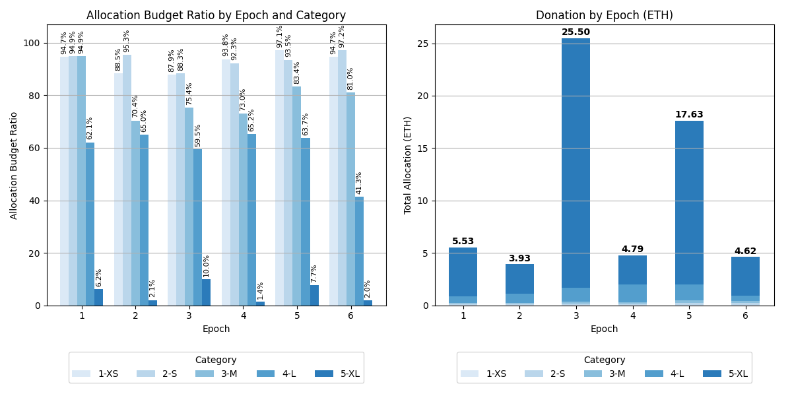

(1.5) Distribution of Donations
{% capture content %} {% include e6/content/text_1.5.md %} {% endcapture %} {{ content | markdownify }}
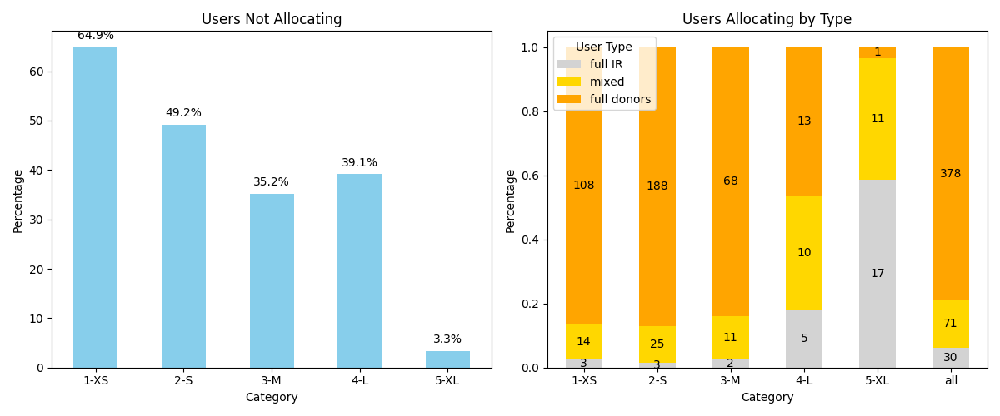
(1.6) User Types
{% capture content %} {% include e6/content/text_1.6.md %} {% endcapture %} {{ content | markdownify }}
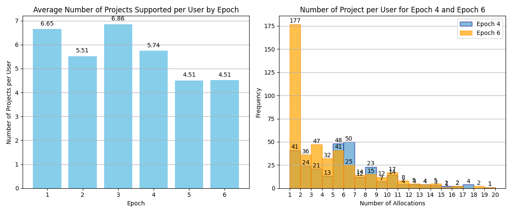
(1.7) Projects Supported
{% capture content %} {% include e6/content/text_1.7.md %} {% endcapture %} {{ content | markdownify }}Funding Distribution
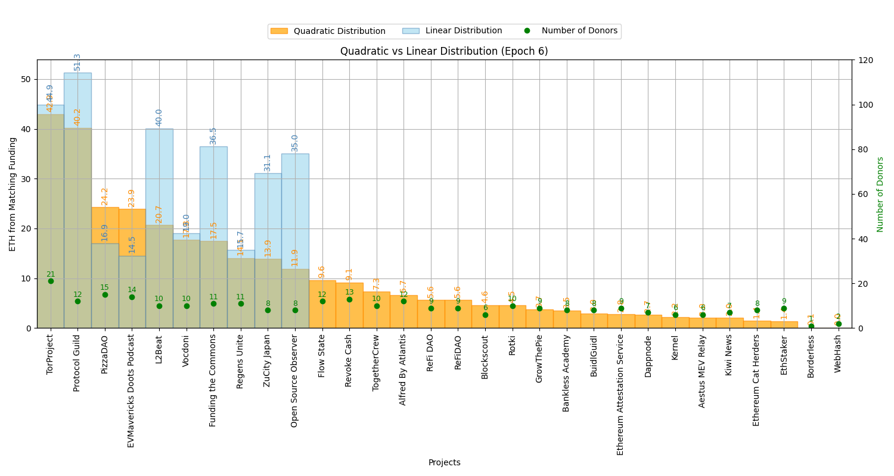
(2.1) QF vs Linear Distribution
{% capture content %} {% include e6/content/text_2.1.md %} {% endcapture %} {{ content | markdownify }}
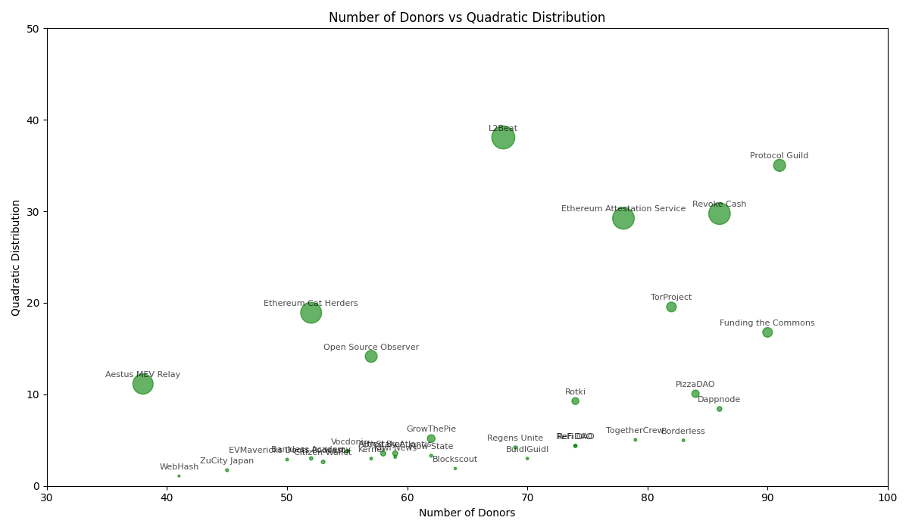
(2.2) Correlations
{% capture content %} {% include e6/content/text_2.2.md %} {% endcapture %} {{ content | markdownify }}
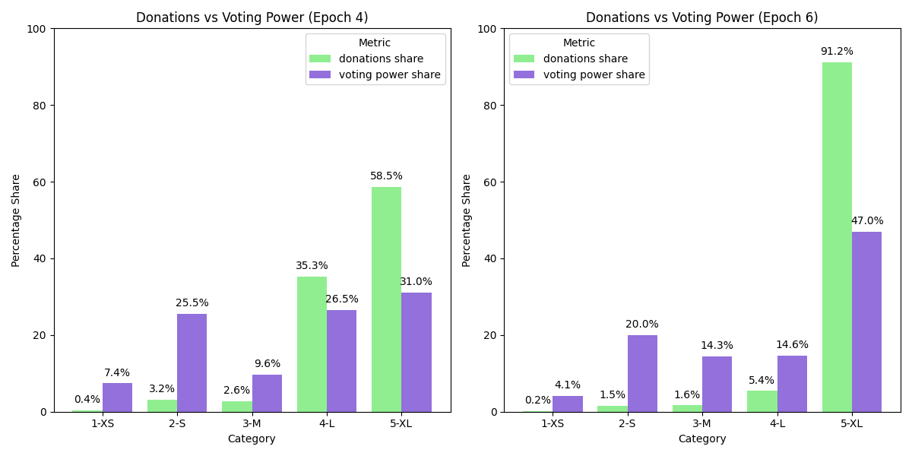
(2.3) Voting Power
{% capture content %} {% include e6/content/text_2.3.md %} {% endcapture %} {{ content | markdownify }}
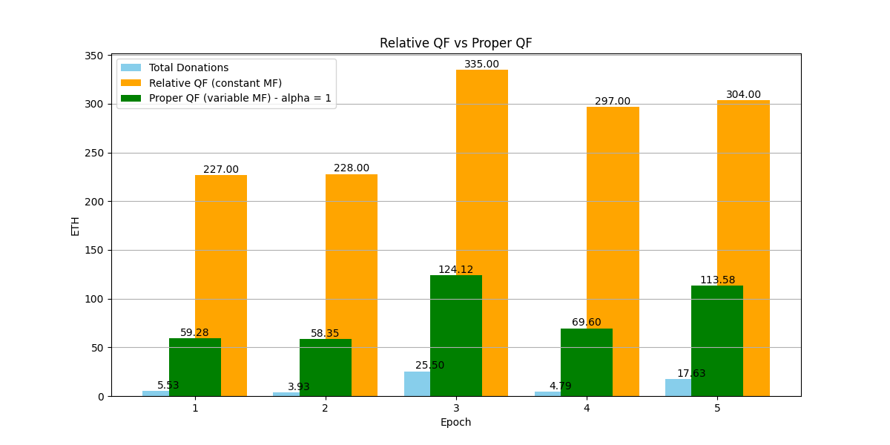
(2.4) Proper QF
{% capture content %} {% include e6/content/text_2.4.md %} {% endcapture %} {{ content | markdownify }}User Flows
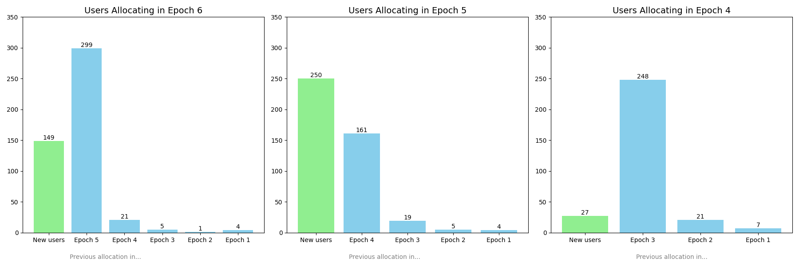
(3.1) User History
{% capture content %} {% include e6/content/text_3.1.md %} {% endcapture %} {{ content | markdownify }}
(3.2) Transitions of Allocators
{% capture content %} {% include e6/content/text_3.2.md %} {% endcapture %} {{ content | markdownify }}
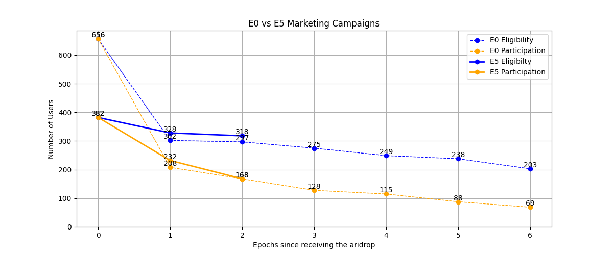
(3.3) Marketing Campaigns
{% capture content %} {% include e6/content/text_3.3.md %} {% endcapture %} {{ content | markdownify }}Voters' Agenda
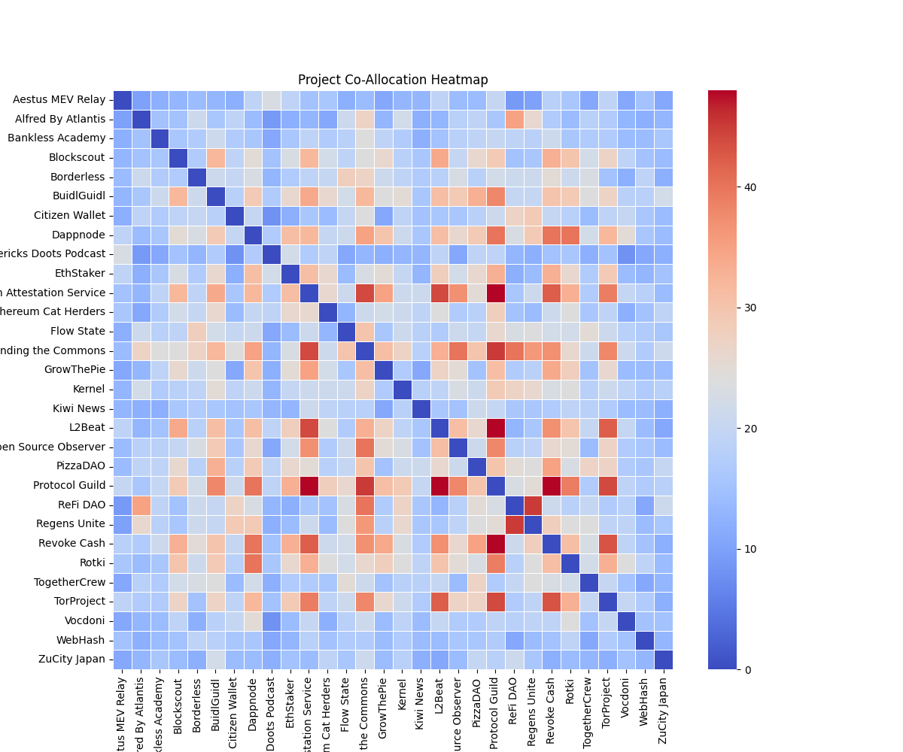
(4.1) Correlations
{% capture content %} {% include e6/content/text_4.1.md %} {% endcapture %} {{ content | markdownify }}
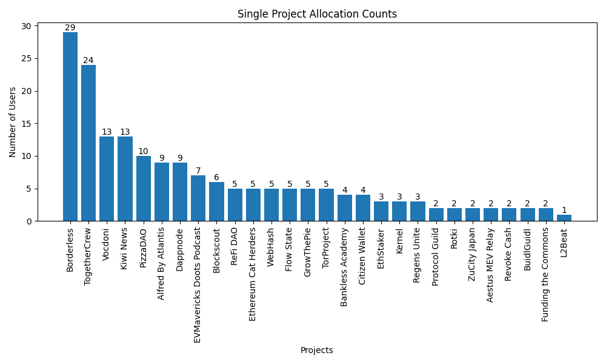
(4.2) Single-project Votes
{% capture content %} {% include e6/content/text_4.2.md %} {% endcapture %} {{ content | markdownify }}Status History

(5.1) Projects and Their Supporters
{% capture content %} {% include e6/content/text_5.1.md %} {% endcapture %} {{ content | markdownify }}
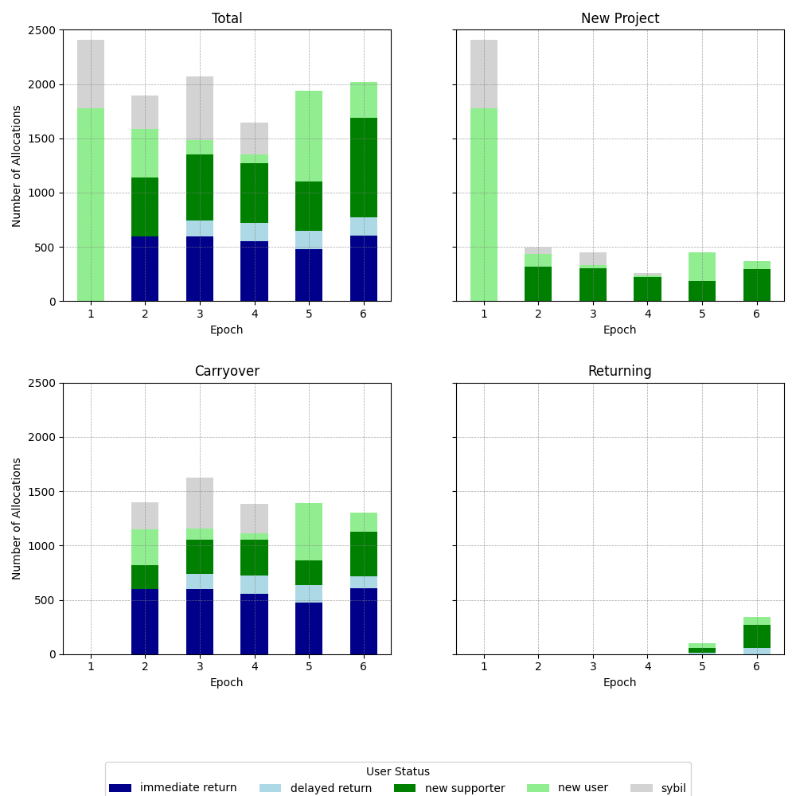
(5.2) Users Across Epochs
{% capture content %} {% include e6/content/text_5.2.md %} {% endcapture %} {{ content | markdownify }}
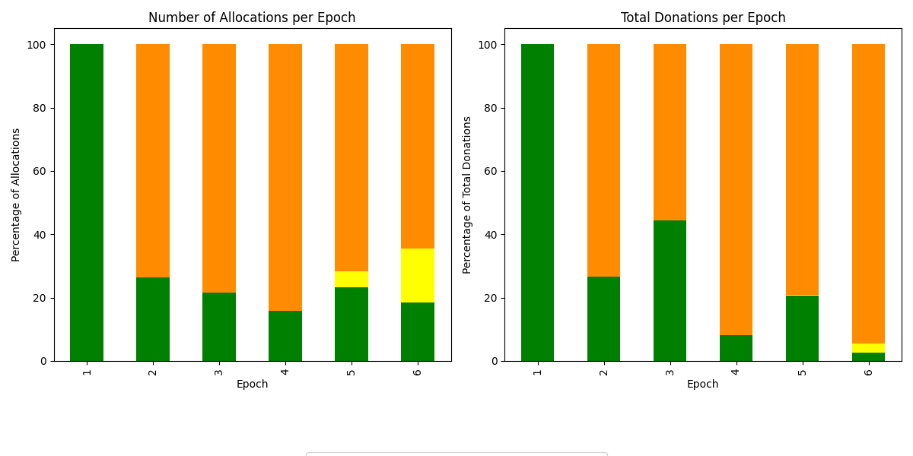